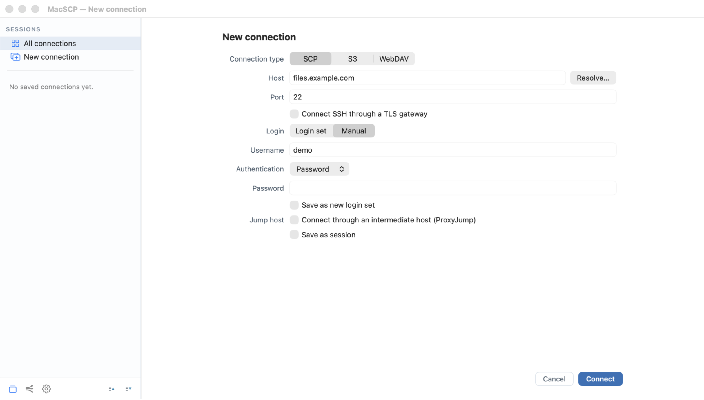

MACSCP 1.0 / USER GUIDE
MacSCP user guide
MacSCP requires macOS 15 or later and supports Apple Silicon and Intel Macs. The interface is available in seven languages.
Connections
Choose New connection, select SSH/SFTP, S3 or WebDAV, and enter the endpoint and authentication details. Save it to reuse it from the sidebar or All connections. Each file tab owns its connection.
SSH supports passwords, private keys and your local SSH agent. Unknown host keys need confirmation; changed keys stop the connection. Saved passwords and passphrases belong in macOS Keychain, not session JSON.
Organize connections in groups and subgroups. Dissolving a group keeps its entries. Import supported OpenSSH configuration entries, Cyberduck SFTP/S3 bookmarks, WinSCP INI files or MacSCP exports from the Sessions menu.

Files and editors
Browse local files on the left and remote files on the right. Drag files or folders between panes, use Space, or choose a transfer action from the context menu. Remote files can also be dragged to Finder.
Use the source tab's queue to follow transfers, handle overwrite/skip/rename conflicts and cancel work. Resume is protocol-dependent and is not available for every operation.
The built-in editor edits UTF-8 documents. Text and hex previews read bounded windows; SSH search looks for literal file names or contents. External-editor saves can upload changes back.
Select a file and choose File → View (F3) or File → Edit (F4). Hold Fn if your keyboard uses these keys for system controls. The viewer and editor have independent, movable and resizable windows that stay open when you switch session tabs. Use ⌘S to save, ⌘F to search in the viewer, ⌘G / ⇧⌘G for the next / previous match, and ⌘W to close. Closing a modified editor asks before discarding changes; save before disconnecting its session.
The SSH button or ⌘T opens an external SSH terminal. There is no integrated terminal emulator or supported command-line client. Disconnect keeps the tab; ⌘W closes it.
Pair two remote sessions
Open two SCP sessions and drag one tab onto the center of the other. The dragged session becomes the left remote pane. Drops near the edges still reorder tabs.
Different destinations transfer through the Mac using the existing connections, without staging a complete local file or delegating credentials. Identical SSH endpoints, accounts and jump/TLS routes can copy on the server with a POSIX shell and cp. Unsupported server-side operations fail without a silent client fallback.
A shared bastion alone does not enable server-side copying between different destinations. Host aliases and shared filesystems are not automatically recognized as one endpoint. Copying onto the source file or a folder into itself is refused.
Local / remote view separates the panes without disconnecting or cancelling queued work. Closing a destination cancels incoming work before disconnecting it.
Tunnels
Switch to Tunnels, choose New tunnel and select local forwarding, remote forwarding or SOCKS5. Choose a saved SSH connection and destination. Keep local listeners on 127.0.0.1 unless wider exposure is deliberate.
Use groups to start or stop related mappings. Tunnels own their connections and remain independent of file tabs. Active local HTTP/HTTPS mappings can open in a browser.
Settings → Startup separates opening the app at login, restoring disconnected windows and starting configured tunnels. Reconnection is a separate option. Saving a tunnel's changes stops it; start it again to apply them.
Diagnostics
Disconnected checks cover DNS, ping and the configured TCP endpoint, with separate jump and destination checks where applicable. Route tracing runs when the protocol connection fails. A silent router alone does not prove an outage.
Connected SSH sessions can read OS/version, uptime, load, available/total memory and disk, user/account counts and IPv4/IPv6 addresses. Probes require no administrator access. Recognizable container interfaces are omitted; Linux container memory limits are respected. The Windows fallback still needs live Windows qualification.
Public-IP discovery is optional and off by default. It runs on the server and can contact ipify, OpenDNS or Google DNS without sending MacSCP credentials.
Throughput test measures upload/download in Mbit/s by writing, reading back and removing a temporary server file. Transfer limits apply. It is not a Mac Internet speed test.
Limits and safe sharing
File transfers use SFTP over SSH, S3 and WebDAV, not the legacy SCP wire protocol. FTP, SMB and AFP are not supported. SSH supports one jump host, not arbitrary multi-hop chains. Route tracing is IPv4-only. RSA authentication uses SHA-512 signatures.
Review diagnostics and logs before sharing: hostnames and paths can be sensitive. Do not include credentials, private keys or infrastructure details in public issues. Follow the repository's security policy for suspected vulnerabilities.
Source and updates
The application is GPLv3 or later. Third-party components retain their own terms. Inspect the source and build instructions at retrotools-apps/MacSCP.
scripts/check-vendor
swift package resolve
scripts/dev build
scripts/dev runFind official assets on GitHub Releases. Packaged direct-distribution builds use signed Sparkle updates with confirmation before installation. Source builds can be rebuilt locally.